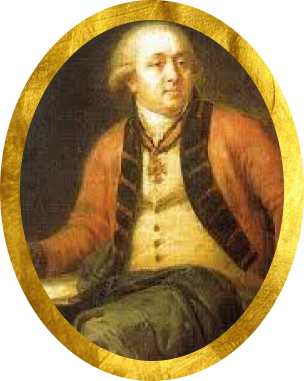
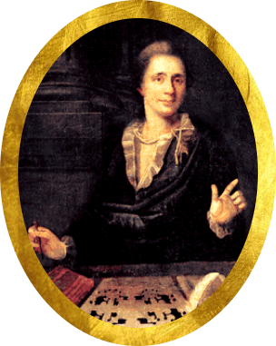
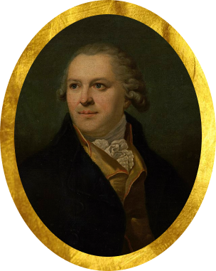
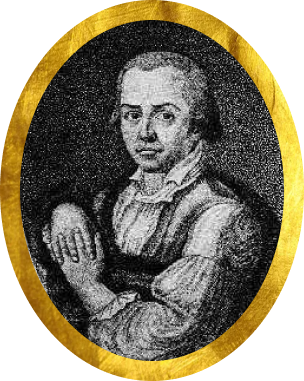

На главную
На главную
Вторая половина XVIII в.
Вторая половина XVIII века — эпоха расцвета архитектурного направления «русский классицизм». Для него характерны логичность, симметричность, чёткость линий, обращение к античной культуре. Вторая половина XVIII века — период высокого подъёма скульптуры. Заметную стилевую перемену в развитие русской пластики принёс классицизм. Энергично развиваются все основные виды скульптуры: рельеф, статуя, портретный бюст, монументальная и декоративная скульптура
Главные деятели искусство




Василий Иванович Баженов
Федот Иванович Шубин
Михаил Иванович Козловский
Иван Егорович Старов